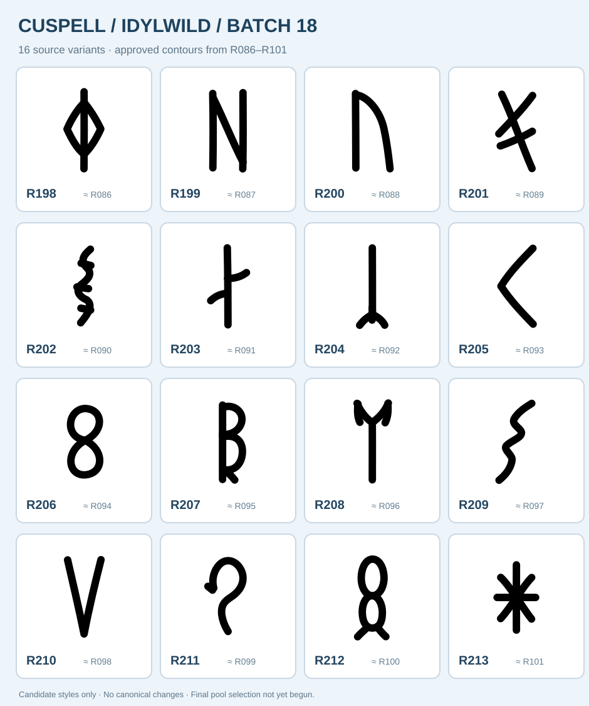
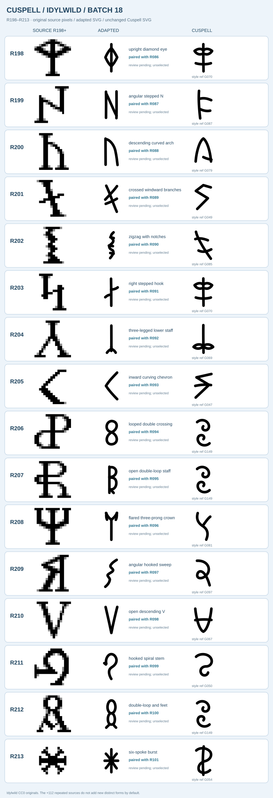
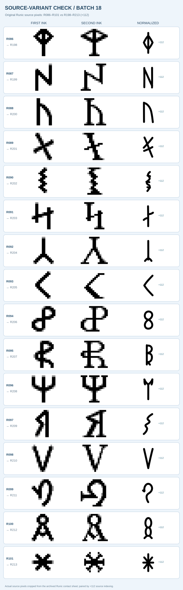

Editable normalized SVGs share approved R086–R101 contours, preserving original source artwork and provenance. These are pending stylization review, not a final selection.
Adapted glyphs

Original / Adapted / Existing Cuspell

Original source pairs
